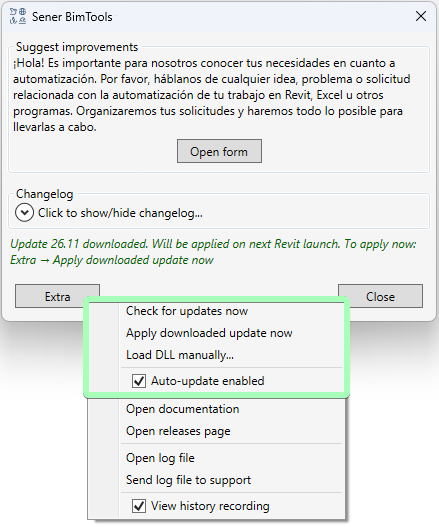

Actualización automática de BIMTools
1. Qué ha cambiado para el usuario
- Antes: El complemento mostraba una ventana de diálogo y descargaba un instalador MSI. El usuario tenía que completar manualmente los pasos de instalación, cerrar Revit y los proyectos abiertos, y confirmar la carga de cada nueva versión al iniciar Revit.
- Ahora: Las actualizaciones se descargan silenciosamente en segundo plano. Para empezar a trabajar con la nueva versión, basta con cerrar y volver a abrir Revit, sin ventanas de instalación ni acciones manuales.
- Hot-reload: Ahora es posible aplicar una actualización ya descargada sobre la marcha, sin reiniciar Revit ni volver a abrir modelos pesados.
Nota: La actualización automática está disponible a partir de la versión v25.33 (7 de mayo de 2026). Si actualizó el complemento después de esa fecha, el cargador ya está instalado y la función está activa.
2. Instrucciones de uso (menú Info -> Extra)
Modo automático
- Al iniciar Revit y después cada 2 horas, el complemento comprueba si hay actualizaciones en el servidor.
- La nueva versión se descarga silenciosamente en segundo plano.
- En el siguiente inicio de Revit se carga la versión más reciente, se eliminan las versiones antiguas y se muestra una notificación con un breve resumen de cambios y un enlace a GitHub.
Comprobar manualmente (Check for updates now)
Inicia inmediatamente una comprobación del servidor e informa del estado:
- No hay actualizaciones disponibles.
- La actualización se ha descargado y se aplicará después de reiniciar Revit.
- Las actualizaciones automáticas están desactivadas.
Aplicar sin reiniciar (Apply downloaded update now)
Inicia el procedimiento de Hot-reload. Es útil cuando hay un modelo pesado abierto y reiniciar Revit resulta inconveniente. La nueva versión se carga inmediatamente en la sesión actual.
Carga manual de una DLL (Load DLL manually...)
Permite seleccionar un archivo .dll del disco, por ejemplo una compilación de prueba de un desarrollador, y activarlo inmediatamente en la sesión actual mediante Hot-reload.
Importante: La carga desde la interfaz es temporal. Después de reiniciar Revit, volverá a cargarse la versión oficial instalada.
Gestión de las actualizaciones automáticas (Auto-update enabled)
Esta casilla controla la comprobación y la descarga en segundo plano. Al desmarcarla, se desactiva el modo automático, pero la comprobación manual sigue disponible.

3. Detalles técnicos (Cómo funciona internamente)
Arquitectura del cargador ligero (Loader) y el aviso de seguridad para complementos sin firmar
Revit solicita al usuario que confirme el inicio de un complemento sin firmar cuando su archivo binario ha cambiado. Para evitar comprar un certificado costoso y distribuir certificados autofirmados a través del departamento de TI de la empresa, la arquitectura se divide en dos partes:
- El manifiesto
.addin(%APPDATA%\Autodesk\Revit\Addins\20YY\) registraBimToolsLoader.dll, que normalmente no cambia cuando se actualizan los comandos del complemento. - El usuario aprueba el inicio del Loader en Revit una sola vez.
- Al iniciarse, el Loader examina el directorio de trabajo (
%APPDATA%\Sener\BimTools\bin\), selecciona la subcarpeta con la versión más reciente e inicia la DLL principal. - Desde el punto de vista de Revit, el registro del complemento permanece sin cambios, por lo que no aparecen ventanas de confirmación del complemento durante las actualizaciones.